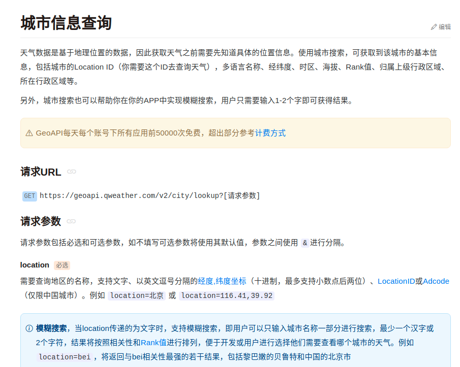
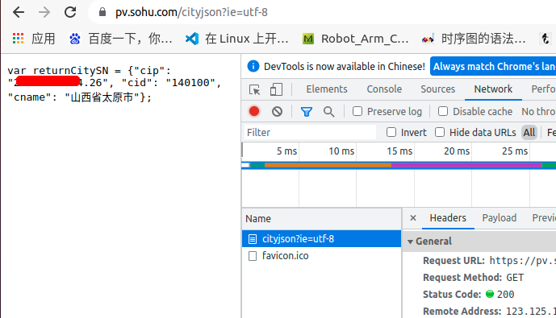
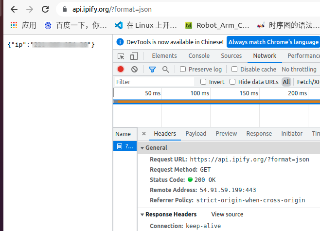
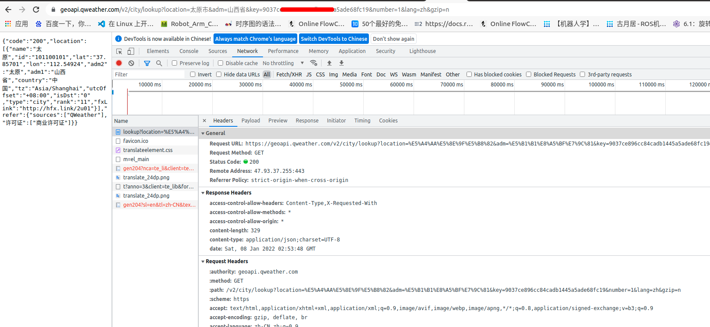
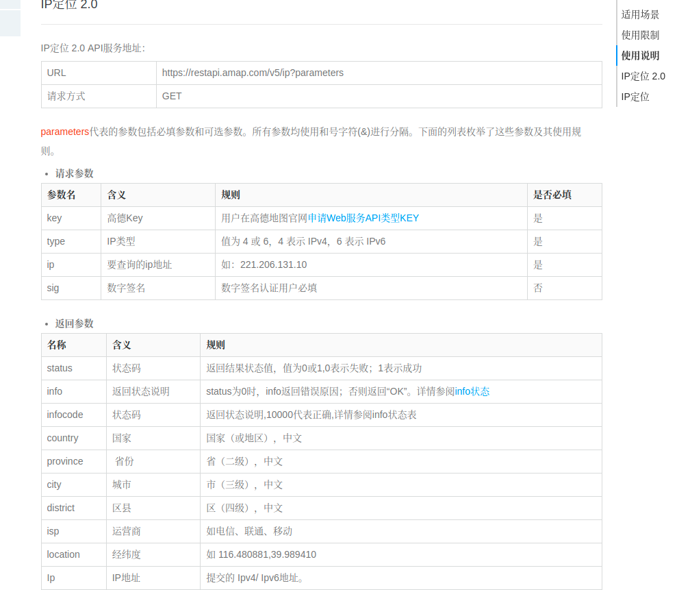
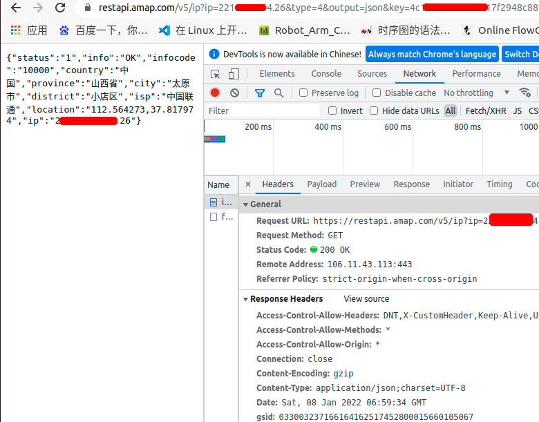
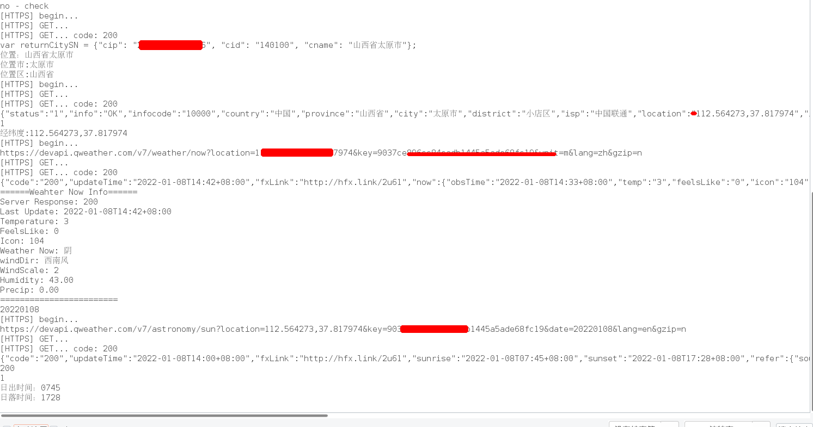

和风天气（实现自动更新定位）
和风天气（实现自动更新定位）
书接上文，在使用和风API获取实时气象数据以及天文服务时，需要传入地理位置参数(或预设位置信息)，感到困惑的是和风的”city_id”,貌似不是通用的ID号，对比高德和第三方的API接口，获取到城市ID好像记得是一致的，或许遵循某种标准 ，暂时不予深究。
拿到行政区划/公网IP
因为和风接口的原因，若是采用城市ID作为访问参数，必须通过和风城城市信息查询接口来得到ID号（和风自己对城市ID进行了编码，非通用编码）。为了得到这个ID，原计划通过网络查询到大致城市区划，拿到市级定位通过和风城市信息查询接口获得城市ID，方便后面气象资料查询。和风城城市信息查询接口文档

第一步肯定要解决市级定位问题，尝试用了百度、谷歌、腾讯、阿里、新浪、搜狐…等几个接口，单说这几个大公司的接口，基本上都要进行开发者认证，高德还好支付宝直接可以认证，但一开始也没计划使用高德，当然这里也有个例外，搜狐和ipify不需要认证，不需要鉴权信息。
搜狐 ipify


区别就是搜狐除了能得到IP外，还可以获取行政区划，也因此选用搜狐接口(一开始没打算用IP，因为和风接口入参是行政区划)。
测试和风城市信息查询
拿到行政区划，开开心心的用浏览器发了几条请求，没问题开心的一批。

顺手把json解析部分一口气写完了，当放到设备上进行访问测试时出了问题，又是一脸懵逼….服务器返回400.一开始以为传参有问题，改了参数还是400，复制请求url 浏览器测试200正常，但是设备上就是不行。
改了改，还是不行，看了浏览器请求头，没思路。怀疑由于这个接口是商用接口，服务器那边可能会有请求设备信息检查或者设备类型识别检查。按理来是，设备层伪造请求信息模拟浏览器或许能骗过服务器，唉！懒得花时间分析，主要没啥用，还贼费劲，即得看设备接口库，又得反复监听分析服务器及浏览器消息传输。直接一个工单，看看和风如何回复吧。
通过高德获取经纬度定位
由于和风城市接口的问题，在诸多尝试未果后，决定弃用城市查询接口，直接在实时气象和天文api接口中传入经纬度来获取，步骤没多没少，只不过是要借助第三方获取经纬度的API接口。

从认证层面考虑，方便的就高德了。上图是高德IP定位的接口，分了两个版本2.0的支持IPV6，普通版只是IPV4。选哪个都无所谓，反正只需要用了IPV4。不过普通接口提供的是左上右下一对经纬坐标，2.0的则只返回一组，其他没啥区别。
测试高德定位
同样拿着IP地址，去浏览器测试高德接口，浏览器测试通过(图示2.0)。

浏览器测试，没问题！！！改了下接口，继续在设备上进行测试。

行政区划正常！
IP获取正常！！
经纬度定位正常！！！
实时气象数据获取正常！！！！
天文数据获取正常！！！！！